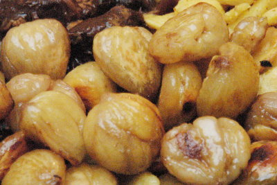

| Zutaten als Beilage für 4 Personen: | |
| 600g | tiefgekühlte Kastanien angetaut |
| 3dl | heisse Gemüsebouillon |
| 4 EL | Zucker |
| 1 EL | Wasser |
| 1 EL | Butter oder Margarine |
Bouillon aufkochen.
Zucker und Wasser in einer weiten Chromstahlpfanne ohne Rühren aufkochen. Hitze reduzieren, unter gelegentlichem Hin- und Herrühren der Pfanne köcheln, bis ein hellbrauner Caramel entsteht.
Pfanne von der Platte ziehen, Kastanien beigeben. Pfanne wieder auf die Platte stellen, Kastanien ca. 1 Minute caramelisieren.
Bouillon dazugiessen und Kastanien zugedeckt ca. 20 Minuten knapp weich köcheln.
Dann offen weiter kochen, bis die Flüssigkeit vollständig eingekocht ist.
Butter oder Margarine beigeben. Pfanne hin- und herbewegen, bis die Kastanien glänzen.
Eventuell mit Salz und Pfeffer würzen.
Betty Bossi Zeitung, Oktober 2000, Seite 2
Siehe auch Glasierte Kastanien nach d'Chuchi
War gut. Allerdings muss man höllisch aufpassen dass man den Caramel nicht zu stark erhitzt und verbrennt denn sonst schmeckt es halt verbrennt. Richard Eigenmann, 28.10.2000
@LINKBACK_TAG@ @WAKELOCK@